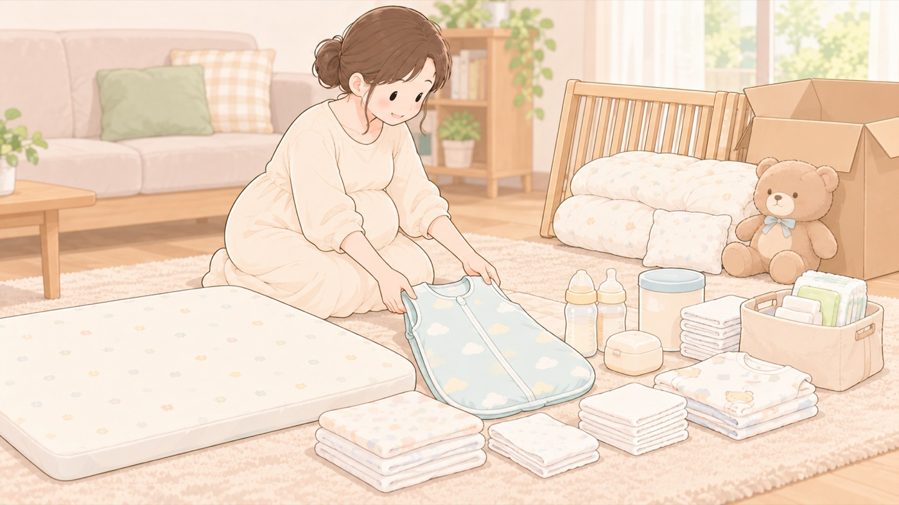

買わない
いま買わなくていいもの
ベッドガードは18か月未満に使えない。生まれる前に買う必要がない
出産前の買い物でまぎれこみやすいものを挙げます。どれもいま買っても使えないか、赤ちゃんの寝床に置いてはいけないものです。

出産前に買わなくてよいもの
- 乳幼児用ベッドガード … 18か月未満の乳幼児には使いません。 マットレスとのすき間に挟まれて亡くなる事故が、2015年からの約10年間で4件起きています。 使えるようになるのは1歳半を過ぎてからなので、出産前に買う必要がありません。 買うときは子供PSCマークPSCマークのうち、主に子どもが使う製品を対象にしたもの。2025年12月に3歳未満向けおもちゃとベビーベッドで、2026年7月にベッドガードとベビーカーで表示が義務になった。国の技術基準への適合と、対象年齢・警告表示の表示が求められる。を確かめます（2027年7月まで経過措置があり、マークのない製品も売られています）
- 掛け布団 … 1歳になるまで使いません。スリーパーで代えます
- 枕・ぬいぐるみ・クッション … 寝床に置きません。窒息につながります
この項目の根拠
- みんなの消費安全ナビ Vol.689 乳幼児用ベッドガードとベビーカーを購入する際には「子供PSCマーク」の表示を確認しましょう！（消費者庁）（新しいタブで開きます）
2026年7月8日に乳幼児用ベッドガードとベビーカーが子供PSCマークの対象製品に追加されること、乳幼児用ベッドガードについては施行の日から1年間の経過措置期間が設定されていること、18か月未満の乳幼児には絶対に使わないこと、マットレスとベッドガードに隙間があるとこどもが挟まれて窒息のおそれがあること。 - こどもの命を守るため、今知ってほしい ── 乳幼児用ベッドガード・ベビーカーの事故を防ぐために（2026年6月25日・製品評価技術基盤機構）（新しいタブで開きます）
2015年から2026年6月までの約10年間に製品評価技術基盤機構に通知された製品事故情報では、乳幼児用ベッドガードでマットレスとの間に挟まりこどもが死亡する事故が4件発生していること、対象年齢・月齢を必ず守り出生後18か月未満の乳幼児には使用しないこと、これから出産や子育てに向けた準備を行う家庭では技術基準等に適合した製品を選ぶことが重要であること。 - 赤ちゃんが安全に眠れるように ～1歳未満の赤ちゃんを育てるみなさまへ～（こども家庭庁）（新しいタブで開きます）
1歳になるまでは掛け布団を使用しないこと。ぬいぐるみやタオルなどを寝床に置かないこと。